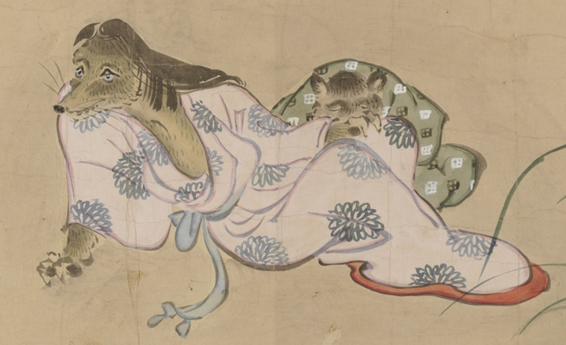

狢；ムジナ，動物；ドウブツ，女；オンナ

女性の狢が菊を眺めている。菊の模様が入った着物を着ている。
著作者：英一蝶／出典：親書誌：U426_nichibunken_0449：妖怪四季風俗絵巻／日付：2019／資源識別子：U426_nichibunken_0449_0001_0011
Copyright (c)2010- International Research Center for Japanese Studies, Kyoto, Japan. All rights reserved.